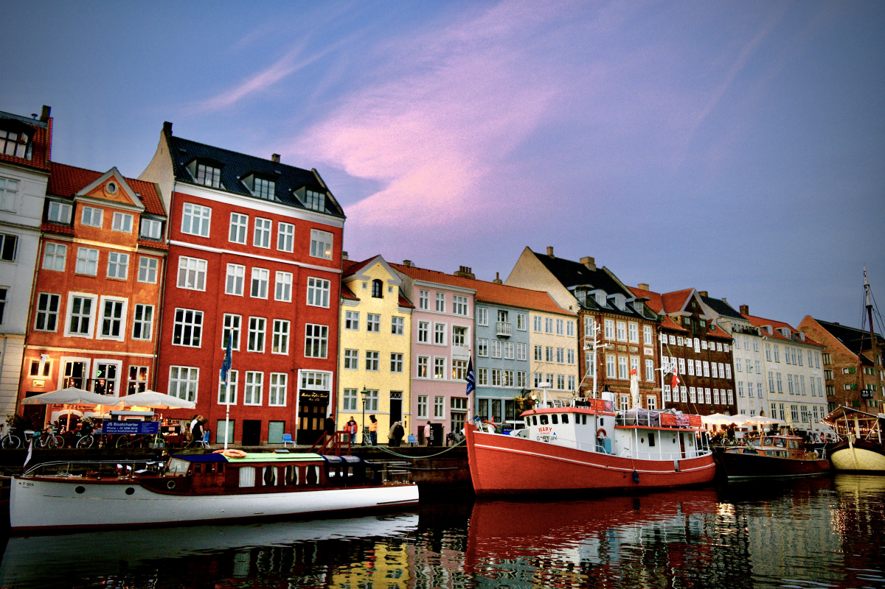
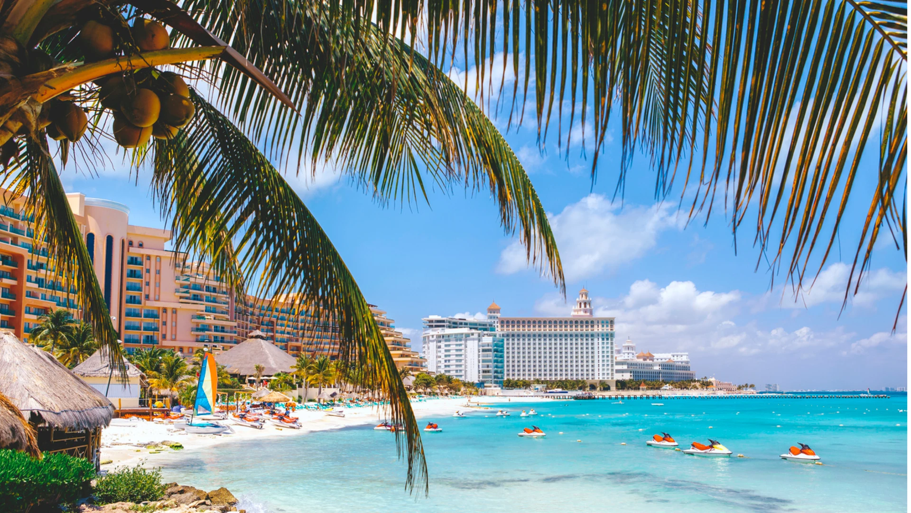
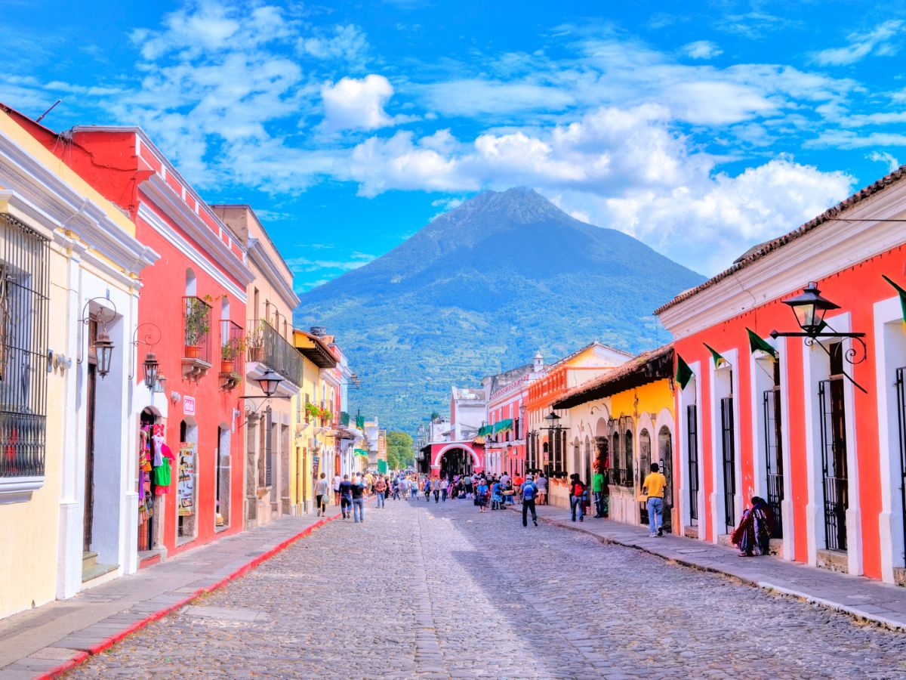

Europa
Dinamarca

A Dinamarca possui uma rica herança cultural que remonta a milhares de
anos.
Cidades como Copenhague, Aarhus e Odense oferecem uma
variedade de museus,
palácios e locais históricos, como o famoso castelo de Kronborg,
associado à obra "Hamlet".
Além disso, a tradição dos vikings e
suas influências estão presentes em muitas atrações.
Amisterdã,Países Baixos
Conhecida por seus canais pitorescos,
museus como o Rijksmuseum
e a Casa de Anne Frank,
além de um ambiente descontraído e acolhedor.
Lisboa,Portugal

A capital portuguesa é conhecida por suas colinas,
azulejos coloridos e a deliciosa culinária,
como o famoso pastel
de nata. Os bairros de Alfama e Belém são imperdíveis.
Paris,França

Conhecida como a "Cidade Luz", Paris é famosa por
seus ícones,
como a Torre Eiffel, o Museu do Louvre e a Catedral de Notre-Dame.
A gastronomia e os cafés charmosos também são um destaque.
Àsia
Japão

O Japão possui uma cultura milenar que combina
tradições antigas com inovações modernas.
Desde templos e santuários históricos até festivais vibrantes, você
pode
explorar uma ampla gama de experiências culturais, como cerimônias do
chá,
artes marciais e festivais de flores de cerejeira.
Bali,Indonésia
Conhecida por suas praias paradisíacas, campos de arroz e cultura
rica.
É um ótimo lugar para relaxar, praticar ioga e explorar templos,
como o Uluwatu.
Bangkook,Tailãndia

Uma cidade cheia de vida, famosa por seus templos deslumbrantes,
como o Wat Arun e o Grande Palácio.
A culinária de rua e os mercados flutuantes são atrações
imperdíveis.
América do Norte
Nova York, EUA

Conhecida como a "Grande Maçã",
Nova York oferece atrações icônicas como
a Estátua da Liberdade,
Central Park, Times Square e
os museus do Metropolitan e MoMA.
Toronto, Canadá

Uma cidade multicultural com a icônica CN Tower,
museus, parques e a
vibrante Kensington Market.
Vancouver, Canadá

Rodeada por montanhas e o oceano, Vancouver é perfeita
para amantes da natureza. Explore Stanley Park, Granville Island
e as montanhas próximas.
América Central
Cancún, México
Conhecida por suas praias de areia branca
e águas cristalinas, Cancún é um destino popular
para quem busca relaxamento e diversão.
San José, Costa Rica

A capital costarriquenha é um ótimo ponto
de partida para explorar a biodiversidade do país,
com parques nacionais e praias incríveis.
Antigua, Guatemala
Uma cidade colonial charmosa, cercada por vulcões.
É famosa por sua arquitetura histórica e cultura vibrante.
América do Sul
Santiago, Chile

A capital chilena oferece uma mistura de modernidade e história,
com belas vistas da Cordilheira dos Andes
e vinícolas nas proximidades.
Buenos Aires, Argentina
Conhecida como a "Paris da América do Sul",
Buenos Aires é famosa por sua arquitetura, tango
e deliciosa culinária, como o famoso churrasco argentino.
Machu Picchu, Peru

Uma das novas sete maravilhas do mundo,
essa antiga cidade inca é um destino imperdível
para os amantes de história e natureza.